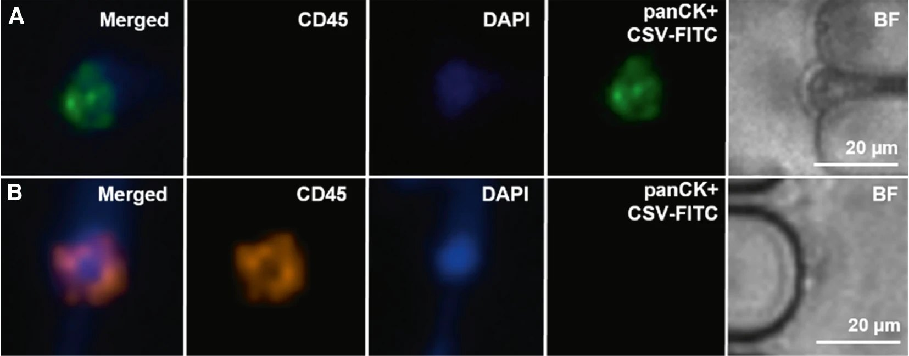
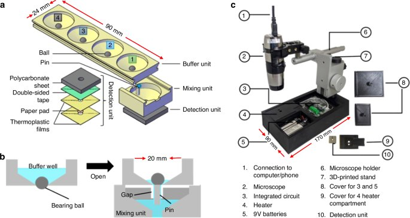

← Research / Project 02
Lateral Filter Array Microfluidics for Circulating Tumor Cell Isolation
There are a handful of tumor cells in a tube of blood containing billions of everything else. Finding them is a separation problem, and the geometry of the channel is what does the separating.
- Principal Investigator
- Prof. Z. Hugh Fan
- Institution
- University of Florida
- Department
- Mechanical & Aerospace Engineering
- Group
- Interdisciplinary Microsystems Group
- Affiliation
- Aug 2025 – present
Research focus
Circulating tumor cells are shed into the bloodstream by solid tumors, and capturing them from a routine blood draw offers a route to cancer diagnosis and monitoring that does not require a biopsy. The difficulty is abundance: the target cells are vanishingly rare against a background of red and white blood cells, so any capture method has to be both highly selective and gentle enough that the cells survive to be analysed.
The lateral filter array microfluidic device addresses this with geometry. A serpentine main channel carries the bulk of the sample while an array of side filters, sized between the diameters of a blood cell and a tumor cell, traps the larger cells off the main flow path. Because the filters sit lateral to the flow rather than across it, the device resists the clogging that limits conventional membrane filtration. My work concerns the relationship between that geometry and how well it actually captures, and pairs the physical separation with the chemistry that has to happen downstream.
My responsibilities
I built a COMSOL model of the microfilter array relating channel size and volumetric flow rate to capture efficiency, so that a device could be designed toward a target rather than found by iteration. I then fabricated and tested more than 200 microfluidic devices to validate that model, working through mask design, soft lithography, and fluorescence microscopy for readout, and cross-checking predicted against measured capture using clinical samples supplied by UF Health Shands Hospital.
Alongside the CTC work I am designing a low-cost platform for sequential reagent release using microfluidic ball valves. The goal is to run chemical lysis, RNA enrichment, and nucleic acid amplification as an ordered sequence inside a single device, enabling multiplexed detection of HIV, dengue, and Zika without an operator pipetting between steps. It is the same instinct as my work in London: replace a procedure that currently requires a trained hand with something the device does by itself.
Media
The device and the data.



Methods & tools
What the work actually involves.
- Modelling
- COMSOL Multiphysics
- Fabrication
- Mask design, soft lithography
- Readout
- Fluorescence microscopy, ImageJ
- Validation
- Clinical samples, UF Health Shands
The volume of devices matters more than it might sound. A capture-efficiency model is only worth having if it survives contact with real fabrication variation, and the only way to know that is to build enough devices that the spread is visible. Two hundred devices is where the difference between a model that predicts and a model that describes started to become obvious.
Contact
Questions about this project?
- noah.haeske@ufl.edu
- Phone
- 407-705-9895